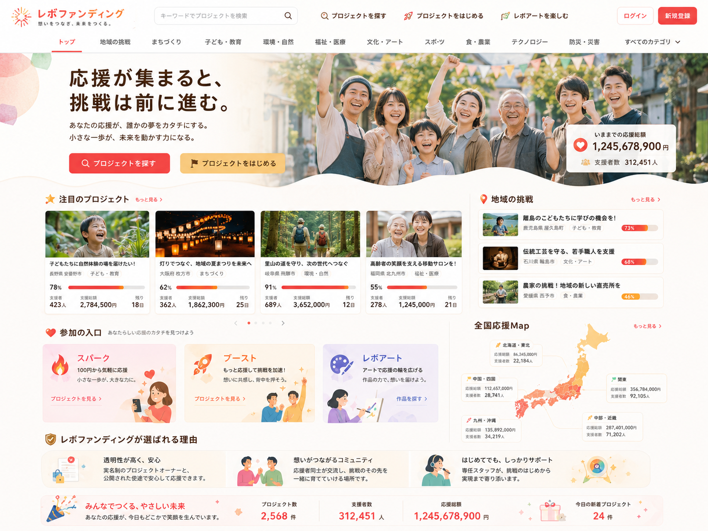
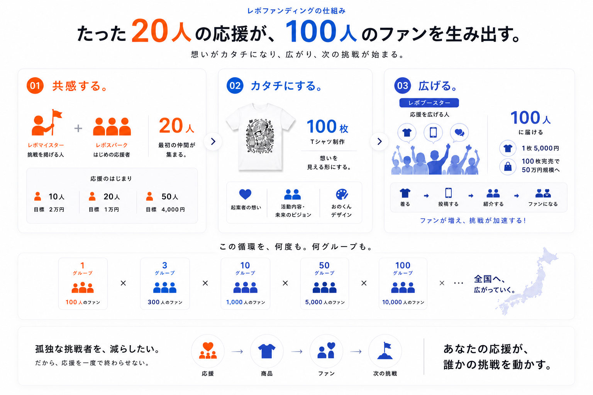

レボマイスターとは
挑戦の起点となり、最初の仲間に向けて願いや背景をひらく人です。実名や顔写真ではなく、この挑戦との関係性を伝える役割として扱います。
スパーク
ひとりの挑戦に、最初の応援と仲間の声が集まる。
スパークは、挑戦に最初の火をつける入口です。応援が集まり、挑戦者が次の一歩へ進める状態をつくります。

最初の共感を集め、想いをカタチにし、応援を広げていく。レボファンディングが大切にする循環を図解で確認できます。

スパークは、挑戦に最初の火をつける段階です。大きく広げる前に、最初に共感してくれる人や、声を届けてくれる仲間を集めます。
金額ではなく、最初の共感・参加・声かけが動き出すことを大切にします。
挑戦の起点となり、最初の仲間に向けて願いや背景をひらく人です。実名や顔写真ではなく、この挑戦との関係性を伝える役割として扱います。
スパーカーは、最初の火をつける仲間です。最初に共感し、最初に声を届けることで、挑戦の立ち上がりを支えます。
スパークが起きると、挑戦の輪郭がはっきりし、次にブーストで応援を広げる流れへ進みます。
ブーストでは、応援パッケージを積み上げていきます。
ここで申請するのは、最初の仲間を集めたい挑戦の起点です。申請された挑戦に応募してくれる方々がレボスパークとして関わり、その応募内容をもとにブーストへ進む構成を整えていきます。
このページでは、レボマイスターとして挑戦を申請する流れと、申請後にレボスパークの応募を受けてブースト構築へ進む関係性を確認できます。決済導線、外部SNSリンクは設置していません。